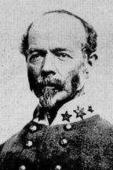

|

|

|
|
|
A career soldier, General Joseph Eggleston Johnston was one of the
top military commanders for the Confederacy. For him, the
Civil War was alternately marked by failure and success. His
predisposition toward defensive warfare placed him at odds
with President Jefferson Davis, and his critics attacked him
for wasting many opportunities for Confederate victory. Like
many of his contemporaries, Johnston's postwar years were
spent in justifying his wartime record and casting doubt on
the record of his many detractors.
Johnston was born on February 3, 1807, into a
distinguished family in Prince Edward County, Virginia. His
father, Peter Johnston, served in the American Revolution,
and his mother was a niece of Patrick Henry. Educated at the
United States Military Academy at West Point, he graduated
in good standing with the class of 1829. Commissioned as a
2nd Lieutenant, Johnston participated in Black Hawk War of
1832, the Seminole War of 1836-37, and the Mexican War of
1846-48. From the 1830s to the eve of the Civil War,
Johnston compiled an excellent record as a topographical
engineer in the southwest, a lieutenant colonel of the U.S.
First Cavalry, and Quartermaster General of the United
States Army, a position he resigned from in 1861 to join the
Confederate forces.
The highest ranked officer from the "old army," Johnston
was appointed brigadier general by President Jefferson
Davis. Along with P. G. T. Beauregard, Johnston directed the
Confederate victory at First Bull Run in July of 1861. The
victory was marred shortly thereafter by a bitter argument
over Johnston's ranking in the Confederate military
hierarchy. He believed that he should be ranked first, but
President Davis disagreed, and Johnston was placed fourth.
This was the first of many personal and professional
disagreements between the two proud and stubborn men, much
to the detriment of the Confederate armies in the Western
Theater.
In spring of 1862, Johnston was given the task of
defending Richmond against the Northern invasion led by his
former Mexican War comrade, George B. McClellan. In late
May, Johnston was severely injured during the Battle of
Seven Pines, and the command of the main Confederate Army
was given to General Robert E. Lee. Johnston resumed his
field career in December, commanding the Confederate forces
in Tennessee and Mississippi. Expected to defend a huge
amount of land against the Federals, Johnston assumed a
defensive stance whenever possible. For his bloodless
approach to war and more, Johnston's men loved him as few
other generals. "In appearance," an observer remarked, "he
is small, soldierly and graying." To his superiors, Johnston
appeared arrogant, affecting a superior attitude about all
things military. Jefferson Davis also considered himself a
military expert, and deferred to no one except Robert E.
Lee, whose record of victory was second to none. Davis was
especially overbearing in his dealings with the western
generals, and Johnston in particular.
When the Mississippi citadel of Vicksburg fell in July of
1863, Johnston was blamed for his apparent slowness in
supporting John Pemberton's beleaguered forces. Davis and
the press criticized Johnston's cautious nature harshly
after the surrender of Vicksburg. He was temporarily
relieved of his command for failing to stem the Union
advance.
Davis could not afford to retire a competent and
respected general like Johnston for long, however. December
of 1863 found him in charge of the Army of Tennessee after
Braxton Bragg lost Chattanooga to the Federals. This time,
Johnston faced William T. Sherman in the Atlanta Campaign of
the spring and summer of 1864. Leaving Dalton, Georgia,
under heavy pressure from Sherman, Johnston executed a
textbook series of backward maneuvers until he entrenched
just outside of Atlanta. Once again, Davis, impatient with
Johnston's timid generalship, removed him from command. His
replacement was the feisty Texan John Bell Hood whose
willingness to do battle with Sherman's troops led to defeat
and the surrender of Atlanta on September 2, 1864. By now
the master of thankless tasks, Johnston squared off against
Sherman again in February of 1865 in the Carolinas Campaign.
Johnston surrendered the Army of Tennessee to Sherman on
April 26, 1865.
Johnston's post-war career was more successful. A
prosperous businessman in railroad and insurance, he also
dabbled in politics as a Congressman from Virginia
(1878-1880). Johnston, who published his memoirs in 1874,
was a popular speaker at veterans reunions throughout the
south. He also was invited on a regular basis to speak to
northern veteran's organizations where he spread a message
of reconciliation and harmony between the sections. At 84,
he became a tragic symbol of reunion when, after serving as
a pallbearer at Sherman's funeral on a cold wintry day, he
caught pneumonia. Shortly thereafter, on March 21, 1891,
Johnston died at his home in Washington D.C.
Source: Joan Waugh, ed., Facts on File Encyclopedia of American
History: Civil War and Reconstruction, 1856 to 1869 (New York: Facts on
File, 2003), 189-190.
|